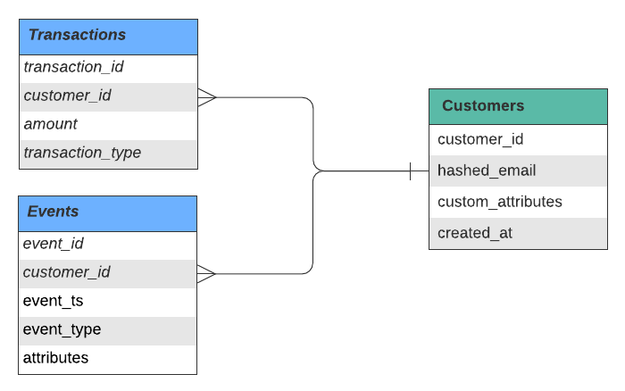
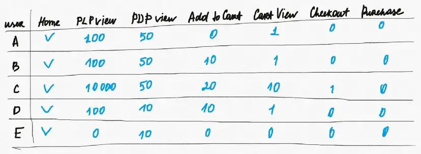

Users usually take more complicated journeys than a heuristically-defined purchase-funnel can capture.
Examples
If the recommendations make users stay longer on Etsy, and users click listings on other pages and modules to make purchases, then the recommendation-attributed metrics fail to capture the contribution of the recommendations to these conversions. The purchase-funnel is based on “click”, and there is no way to incorporate “dwell time” to the purchase-funnel.
Suppose the true user journey is “click A in recommendation → search A → click A in search results → click A in many other places → purchase A”. Shall the conversion be attributed to recommendation or search? Shall all the visited pages and modules share the credit of this conversion? Any answer would be too heuristic to be convincing.
Violation of causal experiment assumptions (ignorability assumption)
Segments of users who follow the pattern of purchase-funnel may not be comparable between treatment and control groups, because the segmentation criterion (i.e., user journey) happens after random assignment and thus the segments of users are not randomized between the two groups.
70% of effects will not show any impact on Engagement compared to a baseline
alpha=0.05 yield an FDR of 18%-25% (i.e. much higher than alpha)
Recommends only testing sizeable changes as these are the type of changes that yield the largest effects and fewer false discoveries (i.e. the tails of the effect size distribution)
Trust Thermocline - Point at which the number of customers that use your product suddenly drops off a cliff (3 nested Threads)
Breaching this point typically occurs when a company continually changes the service, raises prices year after year but doesn’t notice a major change in customer subscriptions/engagement. Then customers start abruptly dropping the product.
Most of the time the company cannot regain the customers after this point and even if they do they will never reach heights they were at previously.
If you’re a relatively large company you should have customer retention department/team/process in place
Signals to watch out for
Watch for grumbling and LISTEN to it.
Don’t assume that because people have swallowed a price or service change that they’ll swallow another one.
Treat user trust as a finite asset. Because it is.
Ground-level customer-facing people will be the ones receiving these signals
Maintaining your customer base
Get your customer retention people in a room with a white board and list all the issues they CONSTANTLY hear from customers but have stopped bothering to report up the chain.
However painful it is to your bottom line. However politically tough it is. However complex the problem. These are the things that need to be fixed.
Terms
Bounce Rate - the percentage of visitors to a particular website who navigate away from the site after viewing only one page. Low bounce rate can indicate the landing page needs improvement
Product Listing Page (PLP) - webpage that lists all your products or a category of your products
Product Details Page (PDP) - webpage for a specific product that shows in-depth information
Behavioral Data
Behavioral data serves two main purposes for teams — understanding how the product is being used or not used (user behavior) and building personalized customer experiences across various touchpoints to influence user behavior.
Launching new features without instrumenting them (e.g. tracking) beforehand takes away the opportunity to analyze how those features are used (if at all) and to trigger in-app experiences or messages when relevant events take place (or don’t).
Primary: web app, mobile apps, a smart device, or a combination — powered by proprietary code
Secondary: all external or third-party tools that your customers interact with directly or indirectly
e.g. Tools used for authentication, payments, in-app experiences, support, feedback, engagement, and advertising
Auth0 for authentication, Stripe for payments, and AppCues for in-app experiences
Opening a support ticket via Zendesk, leaving feedback via Typeform, opening an email sent via Intercom, or engaging with an ad on Facebook
To collect data from secondary sources, you can either use source integrations offered by data collection tools or write your own code
Extract Data
Using vendors are the best option. Maintenance and troubleshooting are not trivial for homemade solutions even for experienced engineers.
CDI or ELT?
CDI is best-in-class to collect behavioral data from primary or first-party data sources — web and mobile apps, and IoT devices
ELT is best-in-class to collect all types of data including behavioral data from secondary data sources — third-party tools that power various customer experiences.
Customer Data Infrastructure (CDI)
Characteristics
Purpose-built to collect behavioral data from primary or first-party data sources but some solutions also support a handful of secondary data sources (third-party tools).
Data is typically synced to a cloud data warehouse like Snowflake, BigQuery, or Redshift, but most CDI solutions have the ability to sync data to third-party tools as well.
All CDI vendors offer a variety of data collection SDKs and APIs
Some CDI solutions store a copy of the data, some make it optional, and some don’t.
CDI Vendors
Segment Connections - supports data warehouses and a host of third-party tools as destinations, as well as store a copy of your data that can be accessed later if needed.
mParticle - offers CDI capabilities along with identity resolution in its Standard edition whereas audience building is available on the Premium plan
Also supports data warehouses and a host of third-party tools as destinations, as well as store a copy of your data that can be accessed later if needed.
RudderStack Event Stream and Jitsu - Open Source; support warehouses and third-party tools but RudderStack offers a more extensive catalog of destinations
Snowplow - open-source and unlike the others, Snowplow doesn’t support third-party tools as it is focused on warehouses and a few open source projects as destinations.
Freshpaint that offers codeless or implicit tracking
MetaRouter which is a server-side CDI that only runs in a private cloud instance
ELT tools
These provide more comprehensive source integrations than CDIs can
Airbyte
Open-source
Offers source connectors with 150+ tools like Zendesk, Intercom, Stripe, Typeform, and Facebook Ads, many of which generate event data
Offers a Connector Development Kit (CDK) that you can use to build integrations that are maintained by Airbyte’s community members
Other (all open source): Fivetran, Stitch, and Meltano
Identity Resolution: Identifying the same users in different data sources
Identify match keys: Determine which fields or columns you’ll be using to determine which individuals are the same individual within and across sources.
Example: email address and last name.
Aggregate Customer Records: Create a source lookup table that has all the customer records from your source tables.
Match & Assign a Customer ID: Take records that have the same (or in some cases, similar) match keys and generate a unique customer identifier for that matching group of customer records. Every customer id that is generated can be used to link the customer sources together going forward.
Roll in more sources: As you get more sources you can start rolling them into the same process by setting the correct rules and precedence for the source.
Master Data Models: Creating a final/clean view of your customers and associated facts and dimensions.
Start with a “Customer → Transaction → Event” framework (more details)
Customers: Create a table of your customers with the ability to quickly add new fields
Transactions: Join key from customers table to their transaction history
Events: Any events you track for each customer
Other business types may have other tables
double-sided marketplace - tables for both sellers and buyers as different entities.
B2B business - separate accounts and contacts entities
Analysis Tools
Uses
Build user journeys to do things like identify the steps where your users drop off and find solutions to retain them.
Track events in real time, e.g. observe how many clicks a new feature has generated since its launch.
General characteristics
Offer SDKs and APIs to collect data from your primary (first-party) data sources
Using purpose-built data collection tools (CDI and ELT) is more efficient and prevents vendor lock-in
Store a copy of your data and allow you to export the data (usually for an additional fee)
Funnel moves down and users drop off until only 3% of users (“% users”) reach Transaction (aka conversion)
“CR” is the conversion rate at each point in the funnel
Provide you with quantitative data about the number of customers that churn at each stage of the funnel. While this information is already valuable, paired up with qualitative data, it gives you all the insights you need to retain more customers.
Typical e-commerce user conversion rate can be benchmarked at around 2.5–3% in a regular business as usual time.
When implementing user journey data collection, less is more. The temptation may be to instrument every page and every button in a product, but this can often be onerous for engineering to implement and difficult to maintain.
Start with just a beginning and end event — these two events will allow you to calculate a conversion rate and a time to convert.
Expand beyond two events to only include critical steps in a user journey. Ensure that events capture user segments such as device, operating system and location.
Benefits
Product Managers:
Useful for new feature launches. By grouping your sessions by user or device properties, you can compare the conversions between different user cohorts.
Is the new feature sticking or not? Are your users struggling with it? Are they simply not interested? Looking at the numbers is one thing, but try getting deeper by watching session replays. Now you see what went wrong exactly.
Marketers:
Break down conversion numbers according to the different acquisition channels and figure out where your most valuable users are coming from. This way, you can focus your efforts on the more relevant channels.
Signals
The more rare an event is that’s high in an e-commerce funnel (i.e more towards Home Page), the more weight it carries in terms of purchase signaling.
If a user has entered the bottom of the funnel (i.e. more towards Begin Checkout) and simply dropped off, it strong reason to reach out in attempts to facilitate or promote movement down the funnel.
Data
Funnel data at the user-level over a time period 
The columns are in sequence according the conversion funnel (i.e. “Home” is the beginning of the funnel and “Purchase” is the end.)
Values are counts of viewing events for webpages in the conversion funnel
Values for Home must be an indicator of whether they have visited or started on the Home Page.
Interpretation
User A
Looks similar to a window shopper, that is engaged enough — 50% of their PLP views turn to PDP views.
They have not added anything to a cart but they may have had something there from previous sessions — which is indicated by 1 cart view.
User B
Likely a customer who is actively trying to make a choice. They may be preparing their cart for a transaction but have not started checking out yet.
User C
Went way deeper into PLP browsing.
Shows signs of being ready to commit to a purchase and even started checking out once. However, they did not complete a transaction.
Possibly, they dropped off in search for coupon codes or better deals elsewhere.
Maybe, based on the high PLP view count, they were deep into search but did not manage to find the products of interest.
User D
Probably knew what they wanted, which is
Indicated by a relatively high ratio from PLP to PDP views and high PDP views to Add to Cart ratio.
They viewed their cart multiple times, reviewing it. But somehow, they have not started the checkout.
This could be a perfect candidate for the abandoned cart campaign.
User E
Probably a returning customer who come back shortly after another session.
Signal Scoring Steps
Choose a timeframe
Depends on the business model and the action you’re expecting to take with it.
Examples
Users are taking up to around 1 month to consider a purchase, then update segments on a 30-day rolling basis.
You want to communicate with your customers daily, then daily morning updates could be something to consider.
Individual Signals: events that are positively associated with the conversion (e.g. the number of daily PLP views, PDP views, add to carts, etc.)
Understanding how a user scores in each one of these signals can help identify which part of the conversion funnel was not covered by a user.
These scores can inform how the business should interact with that customer
For each signal in terms of activity (i.e. counts of events), segment customers into 3 quantiles (< Q33, Q33 < Q66, >Q66) with labels below average, average, above average customers
Can also label customers who did not have any events for a signal at all (0-score users)
Stages of Product Development
Stage 1: Coming up with initial product ideas.
Stage 2: Selecting ideas:
Quantitative analysis to select a subset of ideas to which to devote resources, often referred to as opportunity sizing.
Stage 3: Experiment design:
Involved with selecting success and guardrail metrics, running sanity checks, choosing randomization units, etc.
Candidates will need to consider alternatives when it is not possible to run A/B tests.
Stage 4: Making a launch decision:
Making scientific decisions based on experimentation results.
Diagnosing problems and evaluating tradeoffs.
Throughout the product development lifecycle, working with the appropriate metrics is of paramount importance
Might need to be answered by user research and experiments instead of user analytics data
Collaborate with the UX research team to help design the surveys and interviews, and generate insights
Collaborate with the engineers to design experiments and analyze results
Some reasons people churn:
They might not understand the product.
The product might be hard to use.
People might not see the value of the product.
People prefer a competitor’s product.
The product might have some issues like bugs or being slow.
The new user is not the target user. There could be a mismatch between the user acuiqition and core features.
People might only need our product for a short period of time.
Some reasons people become long term users:
People love the product.
Personalized notification works.
It has become a habit for people to use the product.
Feedback
Misc
Before even touching any of the data, ask yourself some user privacy questions: do we have good reason to be looking at the user data? Would we be violating any user privacy? In modern technology, user privacy is at the forefront so this should always be your first thought.
Types
In-product bug reporting: Many products give users a way to leave feedback if the system crashes or they navigate somewhere unexpected.
In-product feedback: Products can ask for more general feedback in specific locations or always give users an option in site menus.
Social media: Thanks to the wide penetration of social media, it’s common to find feedback about products online. You can track specific tags on Twitter, monitor your company’s Facebook or Instagram profiles or check your executive’s posts.
Internal feedback: Many people working internally in a company will have a view of how the product behaves and capturing feedback from these people is also important.
User research: Companies can actively seek user feedback through user research which often includes recruiting individuals and asking questions directly.
Potential Insights
Inform product direction: If users are consistently asking for a specific feature or requesting you to add more types of content, then the product may very well benefit from following their advice.
Identify bugs: When something goes wrong, users are often happy to complain about it. Monitoring user feedback is a great way to get quick insights into potential problems with your product.
Understand product sentiment: Product teams will often ask themselves, how are we doing? There are many ways to answer this question including benchmarking against similar products and looking at retention metrics, but an equally effective method is to understand product sentiment through user feedback. This can help you know when you may need to invest more in building a better product, or if you can go heavily into marketing spend.
Issues
User feedback is typically biased: If people are unhappy with something, then more likely to shout about it, then if they’re not fussed by it. This can lead to the feedback you actually receive being weighted heavily to the extremities, both users complaining about negative experiences and also those strong advocates who loved your product. There’s no silver bullet for dealing with this, so it’s important that all analyses done be caveated with this.
User feedback is noisy: Feedback comes from people, and people have very different circumstances when coming into contact with your product. A feature might be loved by one user and hated by the next. To this end, it’s important to try to get as much data as possible, and from different sources. Another important approach is to look deeper than the averages, rather than just the mean, look at the actual distribution of reviews — are there a few people with very negative ratings changing the average?
DS Outputs
Self-service dashboards: Users across a company can use the dashboard to get insights on feedback.
Regular reporting: Having a good understanding of the feedback data can lead to automatic generation of reports which can drastically reduce the time to actually understand feedback and get insights out of it.
Scalable datasets: Datasets which can be used by employees across the company.
EDA/Processing
For your product area, identify the keyword/s that users are likely to use, for example if you’re running a clothing e-commerce store, they might be: “fit”, “style”, “expensive”, “ugly”, etc. Try to keep the total number to less than ten.
Sample at least 100 pieces of feedback from the total population and do a simple text match with the terms identified in the step above.
Manually scan through the sampled feedback. Did they all fall into the categories already thought of? Does the category actually match the content? For those missing a category, should there be a new category added to capture this?
You can iterate on the three steps above until you’re happy with how the feedback looks.
Plot the volume of reports matching your keyword/s, do you see a consistent pattern, are there increases around any product launches? Correlation with product launches and known bugs can help confirm the reports correlate with what you’re interested in.
Check the volume is high enough to be useful. You should aim to find a few hundred reports per day in order to get meaningful feedback. Of course, you can work with fewer if that’s all you have, but it will be harder to detect quick changes.
Modeling
Perform sentiment analysis to understand if users are positive or negative towards your product.
Run topic modeling algorithms to have a more flexible understanding of the topics users are giving feedback on.
Track Metrics
This should include taking the analyses completed above and making timeseries to add to dashboards.
Set up anomaly detection to be alerted if there are significant movements in the metric. This can be simple percentage movements in the key metrics that you identified above in the understand and modelling phases, or you can use more sophisticated algorithms.
It’s also good to create automated reports where possible, to summarize longer term trends, such as quarterly reports. You’ll always require some manual work, but setting up the queries and making it as easy as possible to action is important.
Customer 1 is the only tech enthusiast that has bought both photo and document storage
Customers 5 and 6 have purchased both photo and document storage
Types
Success
Guardrail
Funnel
Input-Output
Growth
Platform
Success Metrics
Sometimes called a “north star metric” or “primary metric” or “OKR metric”) are used to measure the success or health of a product. Commonly used (daily/monthly) success metrics include:
Active Users
Bookings / Purchases
Revenue
Click Through Rate
Conversion Rate
Guardrail Metrics
Measures core quantities that should not degrade in pursuit of a new product or feature. Success metrics of other core product teams can sometimes also serve as guardrail metrics. Examples can include:
Bounce Rate - the percentage of visitors to a particular website who navigate away from the site after viewing only one page. High bounce rate can indicate the landing page needs improvement
Cancellation / Unsubscription Rate
Latency
Funnel Metrics
Any family of metrics that tracks the “user journey” through various parts of a product.
AARRR growth metrics (see below for details: A user who is activated must have been acquired (through some channel or organically); a user who generates revenue must have been previously activated.
Conversion Funnels: a standard “conversion path” through the product, captured through basic metrics such as:
Tech Company
Number of visitors to webpage;
Number of logged-in users; Number of users who click particular parts of the logged-in pages;
Number of users who visit the checkout page;
Number of users who purchase.
B2B (Business to Business)
Number of visitors to webpage (leads);
Number of leads who request free trials;
Number of leads to which the Sales team proactively reaches out;
Number of paid customers (each of which is a company / business) who made recurrent purchases.Number of visitors to webpage (leads);
Number of leads who request free trials;
Number of leads to which the Sales team proactively reaches out;
Number of paid customers (each of which is a company / business) who made recurrent purchases.
What makes a good step to monitor in a conversion funnel?
Fraud scores are calculated based on rules, which add or subtract points. The user action may be a transaction, signup or login. Rules look at data points such as an email address, IP address, or social media presence.
Operations Manual Review Volumes
A human reviews the case to determine whether action is needed. In fraud, an model output may trigger a “manual review” to determine whether an event was indeed fraudulent.
Customer Transaction Amounts
Whether or not a transaction not fit a customer’s normal buying habits
Output metrics
Fraud Loss Volumes
Losses Prevented
Revenue
Growth Metrics (AARRR)
Are responsible for enlarging a product’s user base and keeping current users engaged
Acquisition: Getting customers to sign up for a website or product, which requires driving product awareness (often known as “top of funnel”).
Activation: Getting customers to gain basic familiarity with the product, and appreciating the basic product value.
Retention: Getting customers to come back to the product on a regular basis; a customer that exhibits no (or minimal) activity over some predetermined time period is known as churned (the precise definition depends on the business context and varies greatly across teams / companies).
Referral: Getting customers to share the product with others, in turn further growing the user base.
Revenue: Getting customers to adopt one or more paid features that generate revenue for the company; also known as Monetization.
Concepts
Tradeoffs Between Acquisition and Revenue
How should a company strike the optimal balance between revenue maximization and acquiring new customers (the latter can always be done via expensive campaigns, such as providing large discounts / gifts for new users, etc.)?
Different Levels of Engagement
Typically, a company will have multiple tiers of user engagement metrics, which reflect different levels of product engagement (with “activated user” being the lowest tier).
If daily use is what is most valuable (e.g. Facebook, ad revenue), Engagement = Daily Active Users (DAU) / Monthly Active Users (MAU)
Emails and push notifications tend to increase casual numbers (the MAU) but not the daily users (DAU).
The magnitude of the engagement of this type is mostly determined by the product category and doesn’t change much over time
i.e. an app with 10% DAU/MAU doesn’t usually turn into a 40% DAU/MAU
If daily use is NOT where the company’s value comes from, then find and investigate power users.
e.g. Users of companies like Uber, ecommerce, Airbnb don’t use their services every day but these companies are huge.
Retention and Churn Cannot be Easily Estimated Over the Short Term:
Definitions of retention and churn vary from company to company, but typically require weeks if not months of continuous observation. Furthermore, it is possible for a churned customer to recover (often known as resurrection), so it is important to clarify the precise metric definitions and assumptions before answering any questions (e.g. first time churning, most recent time churning, ever churned, etc.).
Difficulty of Measuring Incrementality for Referral Initiatives:
When new referral programs are launched, network effects are typically introduced because any new customer can be simultaneously a referrer and a referee.
Differences Between B2B and B2C Settings:
In B2B companies, acquisition/activation/retention etc. are typically defined at the “company / business” level, because a customer is a company / business. There could be analogous granular user-level metrics as well.
Challenges of International Expansion:
These include additional costs associated with localization (adapting a product appropriately to better fit the customers in a particular market), regulatory / compliance requirements, understanding the competitive landscape, etc.
Power User Analysis
Questions
Which customers generate the most value for your company?
How are they doing it?
Frequency of use?
What % of your users are active (engage in valuable activity) every day last week?
Network effects?
Content they’ve produced or saved?
What characteristics make them different from the casual user?
The action(s) should correlate to some value metric.
How are you going to produce or acquire more of them?
how can I understand their needs better and make sure we continue building in a direction that supports their daily workflow (and that we can upsell new features)?
Power User Curve (aka Activity Histogram or the “L30”)
Histogram of users’ engagement by the total number of days they performed which action you’ve deemed valuable in a month
Can be applied to a cohort if you’re a subscription business, track product launches, track results from feature changes, or results from marketing campaiagns, etc. (see below)
I don’t think this concept has to be limited to time being on the x-axis. It could be any metric value you consider representative of a “power user.”
Depends on your products natural cycle. May be monthly (“L30”), weekly (“L7”), daily, etc.
Example: productivity/work-related products that users engage with Monday through Friday. B2B SaaS products will often find it useful to show this version, as they want to drive usage during the work week.
The 7% (far right) that engage daily shows that a group of users are returning frequently (daily) so it may be possible that the impressions can support an ad business
Successive Power User Curves should ideally show users shifting over more to the right side of the smile
Shows a positive shift in user engagement from August to November, where a larger segment of the population is becoming active on a daily basis, and there’s more of a smile curve.
Inflection points where the line starts to bend upward for a particular month can indicate:
When a critical product release, unblocking features, or a marketing effort might have started to bend the curve
This might be a place to double down, to increase engagement.
For a network effects product, you might expect to see newer cohorts gradually improve as you achieve network density/liquidity.
AARRR focuses too much on Acquisition even though Retention is more important, especially for many internet products that struggle to retain people.
Reasons why retention is more important:
Acquisition strategies (e.g., ads) are expensive and it is often cheaper to retain a user than get a new user
Retention is the foundation of growth
User retention is more directly connected to revenue than acquisition.
Platform Metrics
Departments include Customer Support, Trust and Safety, Payments, Infrastructure, Operations
Many of these are indirectly related to the Growth Metrics
Metrics
Costs of Operations / Infrastructure: A granular understanding of various infrastructure costs allows one to effectively evaluate tradeoffs for expansion.
Average cost of a help center ticket / escalation - essential quantity to track for many types of product changes in customer-facing companies
Success / Failure Rates: These metrics are strongly correlated with conversion, particularly in the Monetization context (since payments are typically the final step of the monetization funnel).
Percentage of transaction attempts that succeed / failure out of all transaction attempts
False Positive / False Negative / True Positive Rates (for fraud detection): rules and models for detecting bad user behavio
Also see input/output metrics
False positives can decrease a good customer’s lifetime value (LTV or CLV)
False negatives increase fraud losses
Fraud Loss Metrics: As a company scales, fraud losses typically follow (from a mixture of)
“Born Bad Users” - Users who abuse the product for inappropriate financial gains and
Third Party Fraud - Users who take over the accounts of good users
Vendor Costs: (e.g. Stripes for payments processing)
Need to be carefully weighed against other core business metrics.
{kind=link}
{kind=link}
{kind=link}
{kind=link}
{kind=link}
{kind=link}
{kind=link}
{kind=link}
{kind=link}
{kind=link}
{kind=link}
{kind=link}